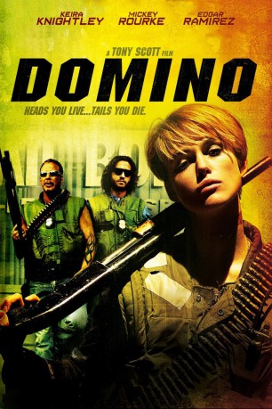

#1033 Domino
 gesehen am 02.01.2016
gesehen am 02.01.2016
 
 IMDB-Wertung: 6.0 / 10
IMDB-Wertung: 6.0 / 10  Metascore: 36
Metascore: 36 
Domino wuchs als verwöhnte Tochter in purem Luxus auf. Aber genau das war ihr vollkommen egal und ihr Model-Auftritt war nur von kurzer Dauer. Sie geht erst richtig auf in ihrem neuen Beruf: Als sie an einem Kopfgeldjägerseminar teilnimmt, weiß sie endlich, was sie will. Zusammen mit ihren Freunden, und praktisch ihrer neuen Familie, Ed Mosbey, Choco und Alf wird sie auf der Verbrecherjagd schon bald von dem Produzenten Mark Heiss bemerkt, der mit ihr eine Reality-Show drehen will. Die anfängliche Routine, die langsam einkehrte, schlägt aber bald um, da ihr Chef Claremont Williams III unbeabsichtig eine Reihe von Ereignissen auslöst, die ihren gewohnten Alltag durcheinander bringt, denn mit solch einem weitreichenden, großen Fall hatten sie es bisher noch nie zu tun...
Jahr: 2005
Dauer: 127 Minuten
FSK: 16
Land: Frankreich Studio: Constantin FilmTonspuren: DTS - ,
Untertitel:
Auflösung: 1080p (1920x800) Größe: 11161 MB
Genre: Action, Biographie, Krimi, Drama, Thriller
Regisseur:  Tony Scott
Tony Scott
Drehbuch: Richard Kelly, Richard Kelly, Steve Barancik
Soundtrack: Harry Gregson-Williams
Darsteller:
 Keira Knightley als Domino Harvey
Keira Knightley als Domino Harvey Mickey Rourke als Ed Moseby
Mickey Rourke als Ed Moseby Edgar Ramírez als Choco
Edgar Ramírez als Choco Delroy Lindo als Claremont Williams
Delroy Lindo als Claremont Williams- Mo'Nique als Lateesha Rodriguez
 Mena Suvari als Kimmie
Mena Suvari als Kimmie Macy Gray als Lashandra Davis
Macy Gray als Lashandra Davis Jacqueline Bisset als Sophie Wynn
Jacqueline Bisset als Sophie Wynn Dabney Coleman als Drake Bishop
Dabney Coleman als Drake Bishop- Brian Austin Green als Brian Austin Green
 Ian Ziering als Ian Ziering
Ian Ziering als Ian Ziering- Stanley Kamel als Anthony Cigliutti
 Peter Jacobson als Burke Beckett
Peter Jacobson als Burke Beckett- T.K. Carter als Lester Kincaid
- Kel O'Neill als Frances
- Shondrella Avery als Lashindra Davis
 Lew Temple als Locus Fender
Lew Temple als Locus Fender Lucy Liu als Taryn Mills
Lucy Liu als Taryn Mills Christopher Walken als Mark Heiss
Christopher Walken als Mark Heiss Joe Nunez als Raul Chavez
Joe Nunez als Raul Chavez Dale Dickey als Edna Fender
Dale Dickey als Edna Fender- Jerry Springer als Jerry Springer
 Fred Koehler als Chuckie
Fred Koehler als Chuckie Tom Waits als Wanderer
Tom Waits als Wanderer- Tabitha Brownstone als Young Domino - age 8
- Chad Parker als Underwater Mobster
 Cheryl Francis Harrington als Outraged Woman
Cheryl Francis Harrington als Outraged Woman- Ashley Monique Clark als Kee Kee Rodriguez
- Patrick Kerr als DMV Manager
 Donna W. Scott als Agent Dina Wilson
Donna W. Scott als Agent Dina Wilson- Mike G. als Hector Maldonado
 Liza Lapira als Chinegro Woman
Liza Lapira als Chinegro Woman- Mark Newsom als Dr. Waldman
 Jack McGee als Detective Chris Cudlitz
Jack McGee als Detective Chris Cudlitz Rolando Molina als Security Manager
Rolando Molina als Security Manager- Morgan Nagler als Stacee Stevens
 Andy Milder als FBI Agent #1
Andy Milder als FBI Agent #1- Neal Matarazzo als FBI Agent #2
- Robbie Kaller als Zoo Brother
- Melissa Lee als College Girl
- Ash Christian als Zoo President
- Michelle Fabiano als Mrs. Cigliutti
- Phillip Darlington als Zendejas
- Julian Berlin als Sorority Girl
- Celesta Hodge als Runway Model
 Lili Mirojnick als Sorority Girl #2
Lili Mirojnick als Sorority Girl #2- Jackson Bolt als Bounty Hunter , uncredited
- Michael Bravo als Goon , uncredited
- Gabrielle Carteris als Herself , archive footage, uncredited
 Mary Castro als Exotic Dancer , uncredited
Mary Castro als Exotic Dancer , uncredited
Datei: X:\2005(A-F)\Domino (2005, FSK16, 1920x800).mkv seit 15.05.2015
Festplatte: HD 2003-2004-2005(A-F)
 Es gibt insgesamt 49 Filme in der Gruppe '2005(A-F)'
Es gibt insgesamt 49 Filme in der Gruppe '2005(A-F)'